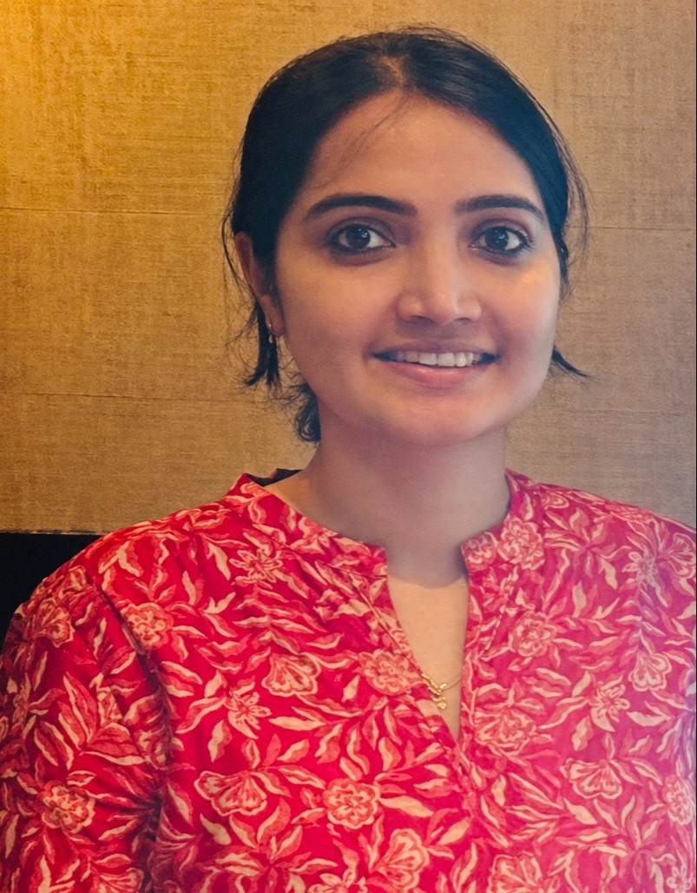

About Me
I am a PhD scholar in the BRAIN Lab at IIT Madras and the Biological Learning and Rehabilitation Group at CMC Vellore, India. My PhD research focuses on using machine learning and deep learning models for arm use assessment in stroke patients using wearable sensors. I have a background in Computer Science and Computational Neuroscience. My interests in machine learning and its underlying inspirations from neuroscience motivated me to pursue a second master's in Computational Neuroscience from BCCN, Berlin. Looking ahead, I aim to pursue research and an academic career in AI for healthcare applications.